Created Dienstag 31 Mai 2016
Problem:
- für die evolutionären Algorithmen soll eine Möglichkeit geschaffen werden, gefundene Lösungen in einheitlicher Weise auszuwerten (per Simulator)
- dazu ist ein einheitliches Modell nötig, das zusätzlich sehr praxisnah sein soll
- geeignet dazu ist das FJSP
- weiterhin sollen mehrere Kriterien auswertbar sein (makespan, Gesamtverspätung, Anzahl der verspäteten Aufträge, Lastverteilung auf den Maschinen, Prozessplankosten, Setupzeiten, Maschinennutzung (idle time), WIP, Durchlaufzeit) die fett markierten sind obligatorisch
- zudem sind realitätsnahe Erweiterungen geplant/nötig:
- Setupzeitkkjken
- Deadlines
- unterschiedliche Startzeiten der Jobs
Lösung:
Repräsentation
- als Repräsentation der Maschinenzuordnung wird eine permutationsbasierte Codierung genutzt [gen2014multiobjective]
- der lokale Index einer Operation entspricht dem Index im Array (locus)
- der globale Index entspricht der Tupeldarstellung (Jobindex, Operationindex) im Modell
- die genutzte Maschine wird wie folgt berechnet: 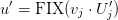
- ist der Wert des j-ten Gens
- 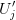 ist die Anzahl der verfügbaren Maschinen (dies schließt nur die für diese Operation erlaubten Maschinen ein)
- FIX() rundet ab
- die Abarbeitungsreihenfolge wird random-key basiert aus dem Rest errechnet [bean1995random]
- Rest: 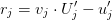
- je höher der Rest, desto höher ist die Priorität des Jobs in der Warteschlange
- durch diese Prioritäten kann es passieren, dass eine spätere Operation O2 eines Jobs eine höhere Priorität bekommt, als eine vorherige O1
- dies führt durch die Abarbeitungsreihenfolge von Jobs zu einem Deadlock
- daher wird die Priorität von O1 angehoben (priority sharing)
Datenstrukturen
- folgende Datenstrukturen sind nötig um die Kriterien für eine Repräsentation eines Individuums zu berechnen:
- Anzahl der verfügbaren Maschinen
- Matrix der Abarbeitungsconstraints von Operationen auf Maschinen
- durchschnittliche Abarbeitungszeiten der Operationen aller Jobs
- Setupzeiten Matrix
- Startzeiten der Jobs
- Deadlines für Jobs
- Anzahl der verfügbaren Maschinen
- alle Datenstrukturen werden in einem XML-File gespeichert und von dort eingelesen (XML Schema, ein Beispielfile findet man: hier)

Berechnung der Kriterien
als Modell wird MILP-1 abgewandelt [defersha2010parallel]
+ Setupzeiten
+ Deadlines
makespan
aus: [defersha2010parallel]
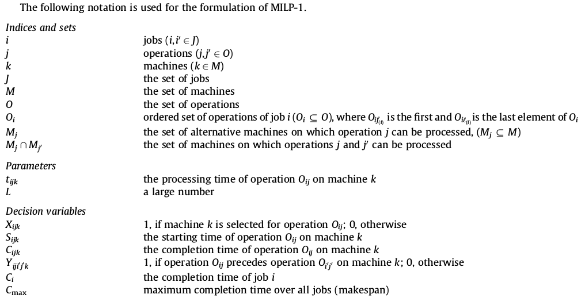
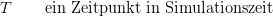
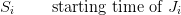
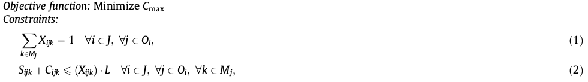
(3) wird verändert zu: 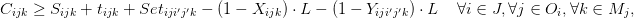
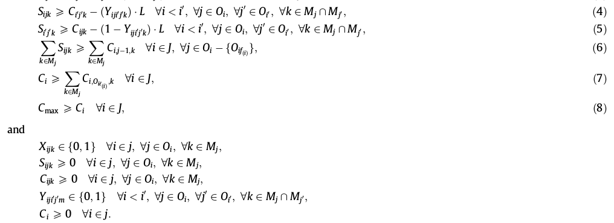
(1) alle Operationen sind nur einer Maschine zugeordnet
(2) nur wenn eine Operation auf einer Maschine gescheduled ist, gibt es eine Start- oder Fertigstellungszeit
(3) die Fertigstellungszeit einer Operation auf einer Maschine ist die Startzeit + die Prozesszeit + Setupzeit, wenn diese auf dieser Maschine gescheduled ist
(4) die Startzeit einer Operation auf einer Maschine ist größer als die Fertigstellung der vorhergehenden Operation auf der gleichen Maschine
(5) sagt das gleiche wie (4)
(6) die Startzeit ist kleinergleich der Fertigstellung der vorhergehenden Operationen (gleich für die direkt vorhergehende)
(7) Die Fertigstellungzzeit eines Jobs ist die späteste Fertigstellung einer Operation dieses Jobs
(8) die makespan ist die späteste Fertigstellung eines Jobs
Gesamtverspätung (total tardiness)
- jeder Job besizt eine Deadline:
- wenn Fertigstellungzeit größer ist als , dann ist deren Differenz die Verspätung (delay), sonst ist die Verspätung 0
- 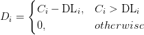
- Gesamtverspätung: 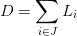
Lastverteilung (load balance)
- die Last(load) auf einer Maschine ist der Quotient aus der Produktivzeit einer Maschine und der Gesamtsimulationszeit
- 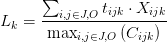
- die Lastverteilung 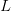 wird dann aus der Standardabweichung aller 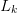 berechnet
Setupzeit
- die Summe aller genutzten Setupzeiten
- 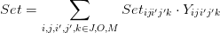
WIP
- die maximal gleichzeitig in der Produktion befindliche Anzahl an Produktionsmitteln
- dazu ist für jeden Job eine Anzahl Produktionsmittel 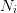 hinterlegt
- nun ist zu folgenden Zeitpunkten der WIP 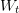 zum Zeitpunkt t wie folgt definiert
- 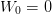
- 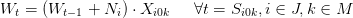
- 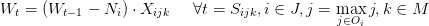
- damit ist der WIP: 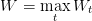
Durchlaufzeit
- die Durchlaufzeit(passtime) wird durch die maximale Zeit, die ein Job während der Simulation in der Produktion verweilt, gemessen
- 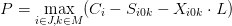
{kind=link}
{kind=link}
{kind=link}
{kind=link}
{kind=link}
{kind=link}
{kind=link}
{kind=link}
{kind=link}
{kind=link}
{kind=link}
{kind=link}
{kind=link}
{kind=link}
{kind=link}
{kind=link}
{kind=link}
{kind=link}
{kind=link}
{kind=link}
{kind=link}
{kind=link}
{kind=link}
{kind=link}
{kind=link}
{kind=link}
{kind=link}
{kind=link}
{kind=link}
{kind=link}
{kind=link}
{kind=link}
{kind=link}
{kind=link}
{kind=link}